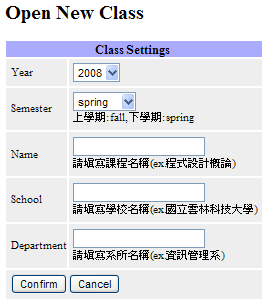
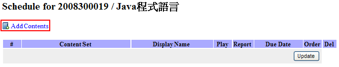
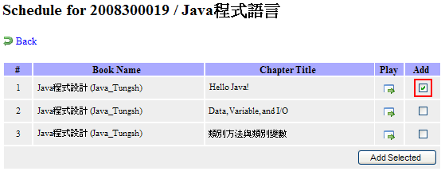
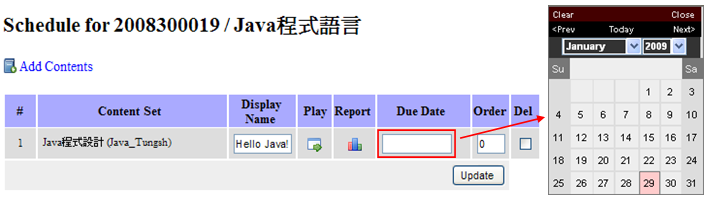

教材製作完成後，便可以將其加入已經存在或新開的課程中。開新課程的流程如下：
1.
在登入後的首頁按下，接著按。然後填入相關資訊並按Confirm鍵即可：

接著會在視窗顯示：

2008300019即是這門課在PLWeb內的課號，學生在註冊時請將該課號告知同學，以便加入該課程中。

將作業加入課程中：按 後便會看到以下畫面：
後便會看到以下畫面：

按下  後會顯示，目前PLWeb所有的練習題組：
後會顯示，目前PLWeb所有的練習題組：

選擇Java_Tungsh的Hello Java!並按下Add Selected後便將該組練習加入了「Java程式語言」課程中。
設定繳交時間與發佈作業。在Due Date欄位填入繳交時間。

接著按瀏覽器左邊的 即可看到，開放出來的作業。
即可看到，開放出來的作業。